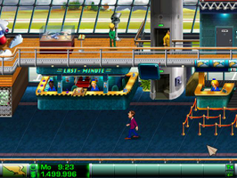
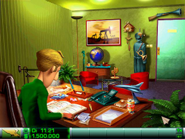

Airline Tycoon Deluxe
Dieser Artikel wurde für die folgenden Ubuntu-Versionen getestet:
Ubuntu 14.04 Trusty Tahr
Zum Verständnis dieses Artikels sind folgende Seiten hilfreich:
Airline Tycoon Deluxe  ist eine Wirtschaftssimulation im Comic-Stil, welche das im Jahr 1998 erschiene Basisspiel sowie alle erschienenen Erweiterungen beinhaltet. Der Spieler leitet in Echtzeit eine Fluggesellschaft und jede getroffene Entscheidung wirkt sich auf das Spielgeschehen aus - die Konkurrenz schläft nicht. Durch geschickte Manöver zieht man Aufträge an Land, plant Flugrouten, kümmert sich um die Instandhaltung der Flotte, motiviert das Personal, entwickelt eigene Flugzeuge, sabotiert die gegnerischen Großunternehmer und lässt alle anderen hinter sich zurück.
ist eine Wirtschaftssimulation im Comic-Stil, welche das im Jahr 1998 erschiene Basisspiel sowie alle erschienenen Erweiterungen beinhaltet. Der Spieler leitet in Echtzeit eine Fluggesellschaft und jede getroffene Entscheidung wirkt sich auf das Spielgeschehen aus - die Konkurrenz schläft nicht. Durch geschickte Manöver zieht man Aufträge an Land, plant Flugrouten, kümmert sich um die Instandhaltung der Flotte, motiviert das Personal, entwickelt eigene Flugzeuge, sabotiert die gegnerischen Großunternehmer und lässt alle anderen hinter sich zurück.
|  |  |
| Spieleszene | Spieleszene |
Installation¶
CD-Version¶
Da der Installer auf der CD veraltet ist und unter Umständen nicht mehr funktioniert, sollte man sich zuerst den aktuellen Installer von bitbucket.org herunterladen und ausführbar machen [1]. Anschließend startet man die Installation durch den Aufruf des Installationsskripts [2]:
./airline.tycoon.deluxe_1.08-multilingual.cdrom_x86-20121106.mojo.run
Als Sprache Deutsch auswählen und die Installation starten. Dabei werden dann die Dateien von der CD auf die Festplatte übertragen. Das Spiel ist nach erfolgreicher Installation unter "Anwendungen -> Spiele -> Airline Tycoon Deluxe" zu finden oder kann alternativ mit ATDeluxe aufgerufen [3] werden.
Desura¶
Das Spiel kann über die Internetseite oder den Client zur Spieleliste hinzugefügt und gestartet werden [4].
Editor¶
Die mit Hilfe des Flugzeug-Editors entwickelten Flugzeuge können über das Internet ausgetauscht werden.
Handbuch¶
Das Handbuch findet man auf der CD im Ordner Manuals als PDF. Alternativ kann es auf bitbucket.org heruntergeladen werden.

Infobox¶
| Airline Tycoon Deluxe | |
| Genre: | Echtzeitstrategie |
| Sprache: |   |
| Veröffentlichung: | 2003 |
| Publisher: | RuneSoft |
| Systemvoraussetzungen: | Prozessor mind. 500 MHz - mind. 128 MB RAM |
| Medien: | CD (1) / Download |
| Strichcode / EAN / GTIN: | 4041098005030 |
| Läuft mit: | nativ |
- Erstellt mit Inyoka
-
 2004 – 2017 ubuntuusers.de • Einige Rechte vorbehalten
2004 – 2017 ubuntuusers.de • Einige Rechte vorbehalten
Lizenz • Kontakt • Datenschutz • Impressum • Serverstatus -
Serverhousing gespendet von